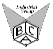

djtaylor@lineone.net
Click here for the Industrial Group home page 
The weak Hydrogen Bond in Structural Chemistry and Biology
Title: The Weak Hydrogen Bond In Structural Chemistry and
Biology
Authors: Gautam R.Desiraju and Thomas Steiner
Publisher: International Union of Crystallography,
IUCr Monographs on Crystallography 9, Oxford Science Publications,
Oxford University Press 1999
ISBN 0 19 850252 4 507 pages Price (hardback): £85
This volume is part of a series of books sponsored by the IUCr and
published by the Oxford University Press (Book Series).
Research in the area of hydrogen bonding is an evergreen endeavour and hydrogen bonds continue to manifest themselves in myriad ways in structural chemistry and biology. The weak hydrogen bond is a part of this extended domain. The roots of the subject reach far back in time, but development has long been slow. A sharp increase of the literature directly related to weak hydrogen bonding occurred in the mid l990s. The facts that have accumulated concerning this particular interaction type have just about acquired a critical enough mass, that the writing of the book was both timely and useful. Fully a quarter of all the ~900 citations represent publications that appeared after the authors commenced their efforts.
The book is divided into three sections. The first (Chapter 1) provides an introduction to the weak hydrogen bond in relation to hydrogen bonds in general and defines the scope of the work. The second and largest section (Chapters 2 and 3) deals with the development of the concept of the weak hydrogen bond. This has been done in two different ways. In Chapter 2, the authors have selected the C-H...0 bond as the prototype of the entire interaction type, and have analysed it in detail in order to justify its inclusion in the larger hydrogen bond family. In Chapter 3, the authors have then extended these arguments to a very wide range of hydrogen bond donors and acceptors. This includes weak acceptors such as p-systems and weak donors in which the H atom is covalently bonded to phosphorous, chalcogen and transition metal atoms. The third and final section is concerned with the ways in which weak hydrogen bonds may be employed in supramolecular chemistry and crystal engineering (Chapter 4) and how they influence biological structure and function (Chapter 5). A brief recapitulation (Chapter 6) concludes the work.
It is a real pleasure to read the book. The volume can be useful for an absolute beginner in this field giving a very general introduction in the problem, providing a profound and, at the same time, a concise historical background. The book is equally helpful for those actively engaged in the research on weak hydrogen bonds (either fundamental, or applied) because of the enormous amount of valuable and up-to-date information (it is enough to mention that the book has 304 figures, 63 tables, 228 structural diagrams). The book is very well organized, each chapter having a recapitulation and a concise summary. It can be used also as a text-book by chemistry, crystallography, biology students.
Elena Boldyreva
Institute of Solid State, Novosibirsk, Russia
Principles of Optics
Title: Principles of Optics: Electromagnetic Theory of Propagation,
Interference and Diffraction of Light
Authors: Max Born and Emil Wolf (7th expanded edition)
Publisher: Cambridge University Press, 2 Dec 1999 ISBN 0-521-64222-1
hardback
size 253 x 177mm £37.50 986 pages 20 halftones,
393 line diagrams
It is approximately twenty years since I first encountered an edition of Born and Wolf as an undergraduate in Physics. It was probably the 6th Edition, published in 1980 (assuming that Oxford's libraries were roughly up-to-date), which was re-printed 7 times and re-issued once in the subsequent 20 years. This level of activity at the printing-press is testament to the fact that Born and Wolf has remained compulsory reading for the student physicist since first published in 1959. It has continued to be highly relevant reading throughout the past forty years during the huge explosion of interest in optics brought about by the advent of the laser. Evidently, this book has the status of a classic text.
My first reactions on being approached to review the book were (a) this book is big and heavy (it runs to 852 pages plus Appendices and weighs 1.6 kg); (b) who am I to be reviewing this sacred text ? I have to admit that it presented a somewhat daunting task and that I have not read every single word. Instead, I have dipped in to various parts of the book, particularly the new "expanded" parts and those most relevant (I hope) to readers of Crystallography News, in producing this review.
This is a well-presented book, generally pleasing to the eye and easy to read. As anyone acquainted with the earlier editions would expect, this is still principally a classical optics text: the first six chapters take us through from "Basic Properties of the Electromagnetic Field" to "Image Forming Instruments" by way of three chapters on geometrical optics. The latter subject, which used to be a strong element of a physics education, is generally now sadly lacking in the undergraduate syllabus. A diligent reader of Born and Wolf could certainly become highly proficient in the subject; bearing in mind that the treatment of geometrical optics does proceed from the electromagnetic theory in the earlier chapters rather than "simple" ray optics. The said diligent reader would really need to be a final year undergraduate, post-graduate or researcher to appreciate the approach; from the publisher's notes, this is the intended readership.
The fourth chapter, "Geometrical theory of Optical Imaging", is one of the new additions, a full section on Computerized Tomography (the CT or CAT scan in medicine), which contains a nice historical introduction and a clear explanation of the foundations of the technique. This is extended in Chapter 13, "Scattering from Inhomogeneous Media" to the subject of "Diffraction Tomography", a current "hot topic" at synchrotron radiation sources such as ESRF. In Diffraction Tomography diffraction of the probing radiation is taken into account. Whereas in current X- ray studies, the diffraction aspect is being used to gain information about hard matter; as the book points out diffraction tomography using ultra-sound, for example, can be used to access higher-resolution information about soft tissues. one of the authors, Wolf, derived a central theorem of diffraction tomography, so anyone intending to undertake this type of studies should certainly read the clear mathematical account in this book.
Chapters 7-11 deal with interference and diffraction of light at slits, obstacles, apertures, arrays etc. I found Chapter 10 "Interference and Diffraction with Partially Coherent Light" of most direct interest because of the extensive discussions of the effects of spatial and temporal coherence. The increasing coherence lengths available at present-day synchrotron radiation sources has raised the issue of coherence high in the scientific consciousness and I found this Chapter very useful reading. I skipped Chapter 12, diffraction of light by ultra-sonic waves, in favour of a deeper reading of Chapter 13 (see above). An X-ray crystallographer reading this book would naturally turn to this Chapter first since nearly all the index references to X-ray diffraction lie therein. (The only reference found elsewhere is in Chapter 8, a reference to Gabor's method of imaging by reconstructed wavefronts, otherwise known as holography. It seems that crystallographers were there first with a method of two-step photography, a method of optical Fourier analysis for reconstruction of crystal structures from diffraction patterns first proposed by Boersch in 1938 and independently by Bragg in 1942). This chapter includes the theory for scattering of X-rays from crystals, including Bragg reflection as a special case of scattering from a periodic potential, the Ewald sphere and the Laue equations. The section ends with a brief mention of the importance that Bragg's law assumes in the theory of the formation of (optical) volume holograms.
Readers of 'Crystallography News' might also, but possibly less frequently than some might think desirable, turn to the final chapter on crystal optics. This summarizes in 62 pages all the background theory for isotropic, uniaxial and biaxial crystal optics. It would not, however, be a very useful handbook for a crystallographer with a slice of material at the polarizing microscope.
So, should BCA members run out and buy this book ? I think the answer is that if you require an excellent text on classical optics, then you might well consider this one, especially now that it includes some relevant material on X-ray scattering. However, if you already have a copy of an earlier edition of this text, perhaps this new edition does not have enough new material to make an extra purchase worthwhile. It is a little surprising that a modern edition of the book lacks any colour plates in covering a photogenic subject such as optics and that given the extension of the scope of the book to cover some X-ray material, nothing is mentioned of advances in X-ray optics (e.g. Bragg-Fresnel lenses and the like). However, it is good to see the basic theory of X-ray crystallography propounded in a mainstream optics text-book and to find reference to the work of famous crystallographers in the optical context. As one would expect of this book, it remains in its new guise a classical text.
Pam Thomas
University of Warwick
Page last updated 14 March 2000
 Click here to return to BCA homepage
Click here to return to BCA homepage